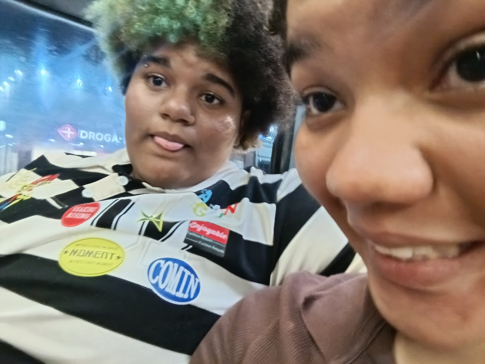

Antes de você
Era apenas eu. Eu e minhas inquietações. Mas agora, tudo é diferente.
Esta é a primeira vez que escrevo uma carta de amor amando tão visceralmente que parece que meu peito não comporta tantas emoções. Por inúmeras vezes, tentei encontrar uma justificativa para tudo isso. Procurei alguma explicação lógica que me dissesse por que tanto amor transborda do meu peito. E, finalmente, descobri o motivo: você. É por isso que escrevo cartas de amor, dedico músicas, distribuo beijos e abraço você sempre que posso. Porque você é, em todos os sentidos, logicamente fascinante. Não existe uma única possibilidade em que eu não me apaixonaria por você. Amo sua inteligência, seu modo de agir, sua risada, sua timidez e sua gentileza. Amo os detalhes que fazem de você quem é. Amo você. E, mesmo sendo péssima com as palavras, continuo tentando. Tento encontrar, em cada frase, em cada gesto e em cada pequena dedicação, uma maneira de fazer você compreender a imensidão do que sinto. Foi por isso que fiz este site: para guardar cada pedacinho do meu amor, cada demonstração de carinho e cada pequena coisa que me faz querer amar você. Para que, de alguma forma, você possa visitar este lugar e encontrar nele um pouquinho de tudo aquilo que nem sempre consigo dizer. Eu te amo.
Com carinho,
Bee.
Pequenos momentos que se tornaram tudo. Clique em um momento ou use os botões para navegar.
Eu era só eu e as minhas inquietações.
Era pra ser momentâneo, eu achei que não iria gostar tanto de alguém que me mandava emojis de animais extintos ou algo assim... Parece que eu me enganei.
Eu já te amava, e nem tinha percebido. Só procurava coragem pra te dizer.
E aqui estamos. E ainda é só o começo.

Era apenas eu. Eu e minhas inquietações. Mas agora, tudo é diferente.
São nas pequenas coisas que você se esconde
Brilhantes e distantemente presentes.
Namora Comigo - Mart'nália "Fica comigo, namora comigo..."
Você me lembra um pudim morno com bastante calda de caramelo.
Me deixa enérgica, animada, disposta a fazer tudinho.
Soneto do amor total - Vinicius de Moraes
não-me-esqueças
Porque tem som que parece feito para nós.
ANAVITÓRIA
Essa música me lembra o quanto o seu carinho me traz paz.
Abra um envelope. Eu estarei aqui.
Abra quando estiver triste
Abra quando sentir saudade
Abra quando tiver um dia ruim
Abra quando quiser lembrar que é amada
Abra quando precisar de forças
Abra quando quiser só ler um "eu te amo"
Abra quando precisar de um sorriso
Abra antes de um momento importante
Clique em uma estrela e descubra o que ela tem a dizer.
Guardo esse instante com todo o carinho do mundo.
E se você chegou até aqui...
...eu só queria te dizer uma última coisa.
Obrigada por existir na minha vida.
Voltar ao início